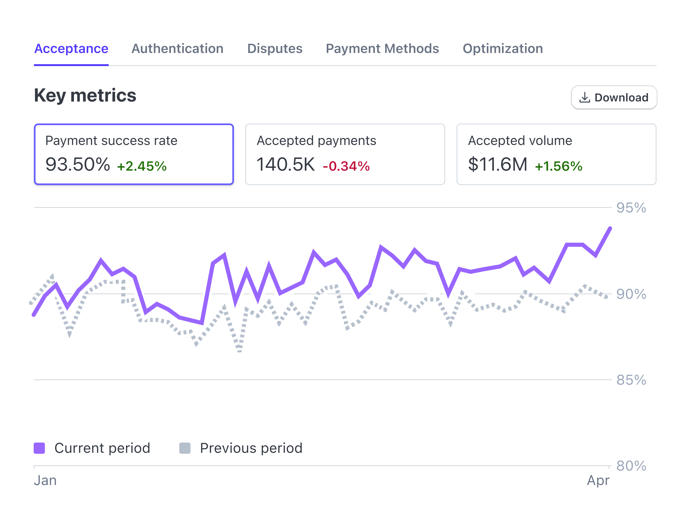
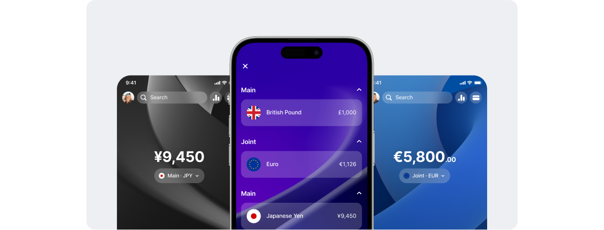
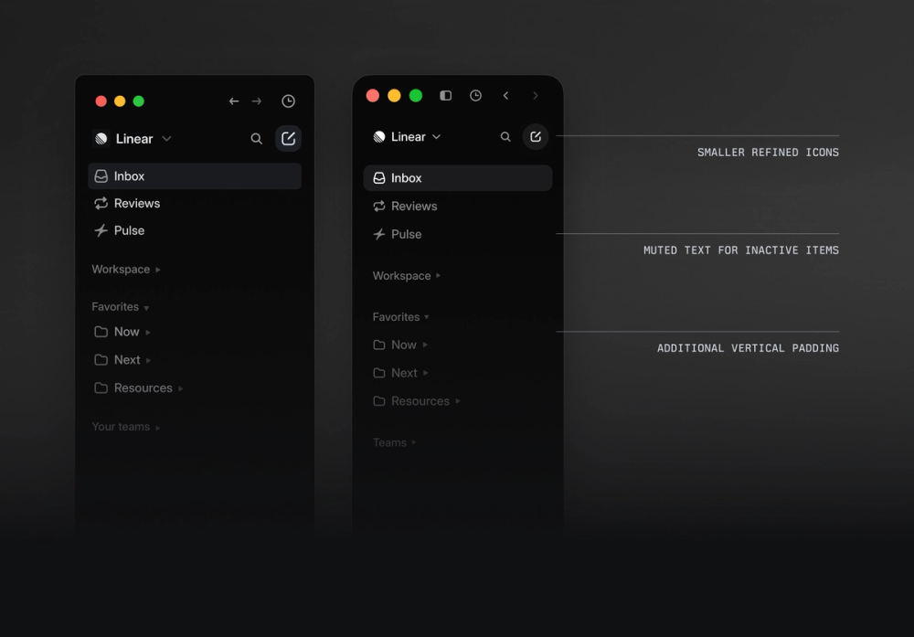

어젯밤, 실적보다 앞서 움직인 기대
장기 수요 전망은 유지됐지만, 투자자들의 관심은 성장률의 정점이 언제인지로 이동했습니다.
나스닥 · 전일 대비−0.6%성장 기대의 속도 조정
선택하신 방향을 하나의 화면으로 통합했습니다.
대비가 강한 브리핑, 연속된 읽기 영역, 단색 배경 위의 절제된 글래스.
시장의 흐름, 내가 읽는 사람들의 생각
장기 수요 전망은 유지됐지만, 투자자들의 관심은 성장률의 정점이 언제인지로 이동했습니다.
가격 방향과 함께, 자금이 어디로 모이는지 봅니다.
어제의 낙관과 오늘의 우려가 어느 가정에서 갈라지는지, 원문과 연결해 확인합니다.
위험 선호, 달러, 금리의 변화를 함께 읽습니다. 단일 점수보다 변화의 근거를 먼저 보여줍니다.
기존 홈의 나머지 모듈도 왼쪽 흐름 안에 유지합니다.
팔로우 원문과 시스템 업데이트를 함께 봅니다.
HBM 수요 자체보다 다음 분기의 성장 속도에 대한 의견이 엇갈립니다. 지금의 우려가 펀더멘탈 변화인지, 기대 조정인지 구분해야 합니다.
수요 전망은 유지. 공급 확대 시점에 대한 언급은 증가. 상반된 주장을 근거별로 나누어 보여줍니다.
HBM 수요 성장
공급 확대 시점
생산 능력, 제품 믹스, 고객의 재고. 영상의 핵심 발언과 해당 구간으로 이어지는 카드.
방향, 변화 속도, 그 속도에 대한 기대를 분리해 기록합니다.
새로 수집된 데이터와 기존 해석의 차이를 연결합니다.
카드·피드 바깥 표면 20px, 컨트롤 10–12px. 밝은 단색 배경과 불투명 콘텐츠 표면을 사용합니다. 다크 모드도 색 번짐 없는 단색입니다.
라이트에서는 짙은 잉크색 브리핑, 다크에서는 밝은 브리핑을 사용해 핵심을 구분합니다. 큰 숫자는 이 영역에 집중합니다.
피드 전체가 하나의 둥근 표면입니다. 아티클은 별도 카드 없이 얇은 구분선으로 이어집니다. 출처·시각·해석·근거는 그대로 표시합니다.
글래스 적용: 도크와 ‘피드 보기’ 컨트롤. 밝기·얇은 테두리·작은 그림자로 재질을 표현하고, 다색 배경·콘텐츠 위의 중첩 블러는 사용하지 않습니다. ‘투명도 줄이기’에서 단색 버전과 비교할 수 있습니다.
공식 제품 이미지·문서·디자인 글을 대상으로 조사했습니다. 로그인한 최신 앱의 전수 사용성 테스트는 아닙니다. 아래 ‘관찰’은 공개 자료에 근거하고, ‘적용’은 Explorer를 위한 설계 판단입니다. 브랜드별 외형을 그대로 복제하지 않습니다.

관찰 지표 선택, 기간 비교, 상세 필터를 분석 흐름에 연결합니다.
적용 지표 카드의 강조 기준을 하나로 두고, 요약에서 근거까지 같은 맥락을 유지합니다.
공식 화면·문서 ↗
관찰 계정 전환과 자주 쓰는 기능을 홈에 모으고, 배경·위젯을 개인화합니다.
적용 큰 핵심 지표와 여유 있는 그룹을 사용합니다. 커버리지·소스 설정은 후속 개인화 대상으로 제안합니다.
공식 제품 소개 ↗
관찰 사이드바·아이콘·구분선의 강조를 낮추고 액션 위치를 일관되게 정비했습니다.
적용 피드를 큰 표면 하나와 행 구분으로 구성합니다. 카드 안에 카드를 반복하는 구조를 줄입니다.
공식 디자인 회고 ↗
관찰 글래스를 콘텐츠 위의 탐색·제어 층에 사용하고, 유리의 중첩을 피하도록 안내합니다.
적용 헤더·도크에 반투명 재질을 제한하고 지표·원문은 단단한 읽기 표면에 둡니다.
공식 설계 원칙 ↗ · 이미지 출처 ↗이미지는 각 기업의 공식 공개 자료이며 저작권은 해당 권리자에게 있습니다. 연구용 참고 이미지로 분리했으며 제품 자산으로 사용하지 않습니다. Mercury는 공식 설명을 참고했고 이미지 파일은 수집하지 못했습니다. Revolut 사례는 2023년 제품 개편으로, 현재 전체 앱의 외형을 대표한다고 가정하지 않습니다.
모든 카드가 중요하다고 말하지 않게 합니다. 페이지 제목 → 브리핑 핵심 → 피드 제목 → 출처 순으로 무게를 나눕니다. 액션은 가까운 맥락에 배치합니다.
다른 성격의 지표는 카드로 묶고, 반복되는 피드는 행으로 읽을 수 있게 합니다. 배지보다 출처명·발행 시점·근거 링크를 우선합니다.
글래스는 탐색이 콘텐츠 위에 있다는 감각을 줍니다. 원문과 숫자는 불투명 표면에 유지해 긴 시간 읽기 쉽도록 합니다. 움직임은 상태 변화에만 사용합니다.
| 역할 | 01 정밀 | 02 마켓 홈 | 03 글래스 |
|---|---|---|---|
| card radius | 12px | 20px | 16px |
| page title | 28 / 36 | 32 / 40 | 26 / 34 |
| hero metric | 38px | 46px | 38px |
| card padding | 20px | 24px | 20px |
| 피드 경계 | 하나의 표면 + 행 | 개별 카드 + 여백 | 불투명 카드 |
| 탐색 표면 | 단색 · 낮은 강조 | 단색 · pill | blur 20–24px |
| 공통 | IBM Plex · 본문 14–16px · 메타 12px · 열 간격 24px | ||
여기서 비교한 값은 후보 프리셋입니다. 채택 후 하나를 기본값으로 정하고, 강조 지표처럼 역할이 다른 항목만 별도 토큰으로 유지합니다. 앞선 토큰 기획안의 page 24px 등과 차이가 있는 값도 최종 채택 시 단일 기준으로 통합합니다.
navigation / overlay반투명 + blur + 얇은 하이라이트content / data불투명 카드 · 선명한 텍스트reduced transparency단색 표면 · blur 제거unsupported browser@supports로 단색 폴백CSS blur 기반의 웹 해석입니다. Apple의 실시간 광학 굴절이나 네이티브 적응형 재질을 재현했다고 주장하지 않습니다. 투명도를 줄이는 옵션을 제공하고, 배경이 변하는 상태에서도 대비를 검사해야 합니다. 스크롤 본문 전체에 blur를 적용하지 않아 렌더링 부담을 제한합니다.
전체 인상은 02의 둥근 마켓 홈, 피드는 01의 연속된 읽기 표면으로 통합했습니다. 배경은 단색을 유지하고 글래스는 도크·탐색 컨트롤에만 사용합니다. 앞선 세 안은 비교 이력으로 남깁니다.
AppShell → PageHeader / Overview / Toolbar → SplitWorkspace의 기존 슬롯 계획은 유지합니다. FeedPost는 source / system 구조를 보존하면서 표면·경계·메타정보 순서를 정비합니다. 출처 기반 데이터와 기존 라우터는 그대로 활용합니다.
선택된 방향을 토큰 갤러리에 통합 → 홈·피드 파일럿 → 기업·리포트 확장. 키보드·터치, 좁은 폭, 짧은 높이, 레일, 라이트·다크와 투명도 감소를 확인합니다. 글래스는 실제 스크롤 성능도 별도로 측정합니다.
동작: 방향 전환, 모바일·다크·투명도 감소, 피드 필터, 근거 대화상자, 독립 스크롤, 모바일 패널 전환. 도크·카드 원문은 외형 예시이며 실제 데이터 조회나 계정 변경을 하지 않습니다. 모바일 목업은 고정 프레임 안에서 스크롤하지만 실제 페이지는 문서 스크롤을 사용하도록 설계합니다. IBM 웹폰트 외의 참고 이미지는 함께 저장했습니다. 기존 토큰·팔레트 기획안 ↗
{kind=link}
{kind=link}
{kind=link}